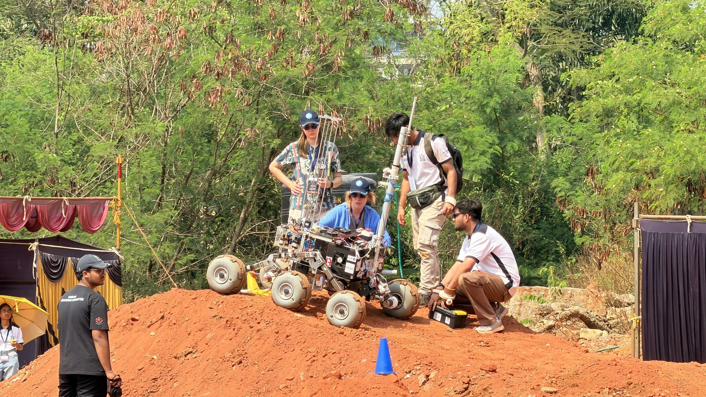

01Measured results
02The engineering problem
Ganga wasn't built just to drive. IRC mission tasks ask one platform to move through difficult terrain, interact with its environment, manipulate hardware, deploy instruments, collect and analyse samples, and execute tasks with increasing autonomy.
The hard part is the handoffs. A decision in one subsystem changes what the rest of the rover can do in the field. Mass and packaging affect mobility, the manipulator's reach decides which tasks are possible, and the sampling mechanism has to work alongside the electronics, software and operators.
03System architecture
The major subsystems and how they serve the mission. Highlighted blocks are the ones I led or oversaw.
04My contribution vs. the team's
What I owned
- Overall mechanical development of the rover, as Team Captain
- Oversight of the 5-DOF manipulator
- Oversight of the ABEx soil-sampling subsystem, building on the subsystem I designed for Alaknanda
- Integration of PU wheels sourced from Wheeleez, Australia
- Field-testing at IRC 2026
Team-owned
- Electronics and power
- Software, control and autonomy stack
- Mission operations as a full team
05Testing & validation
Ganga was evaluated in the field at IRC 2026. The ABEx subsystem reached 150 mm of soil penetration and recovered 12 g of sample. Across the competition the rover logged 21 successful trials out of 30.
That leaves 9 of 30 trials unsuccessful. Those are as much a part of the engineering record as the result.
06Evidence
Mission tasks at IRC 2026


More evidence


